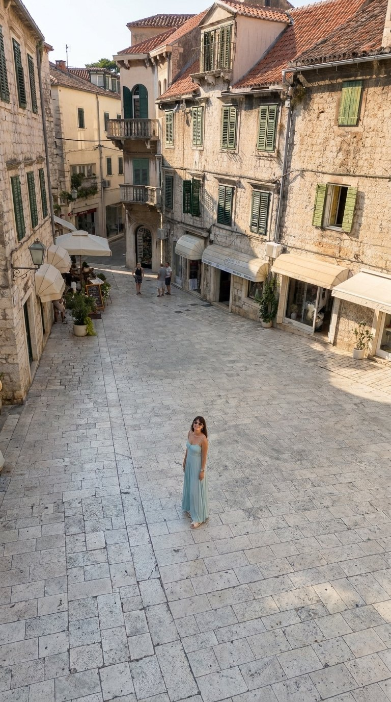

01
Вид з дрона
/DRONEVIEW
Високо в повітрі, камера дивиться вниз під кутом. Показує масштаб локації: подорожі, природа, місто.
Повний промптNano Banana Pro
Camera angle: high aerial drone shot from about 15–20 meters up, looking down at a steep angle. The person stands in the center of the frame, small but clearly recognizable, face tilted up toward the drone. Plenty of the surrounding location is visible around them: ground texture, paths, trees or buildings. Wide drone lens, crisp detail, even daylight.
база + ракурс
Коротка командаChatGPT
/DRONEVIEW — Recreate this photo as a high aerial drone shot looking down at a steep angle, the person small in the center looking up at the camera, lots of the location visible around them. Keep the same person, face, outfit and location. Vertical 9:16 frame.